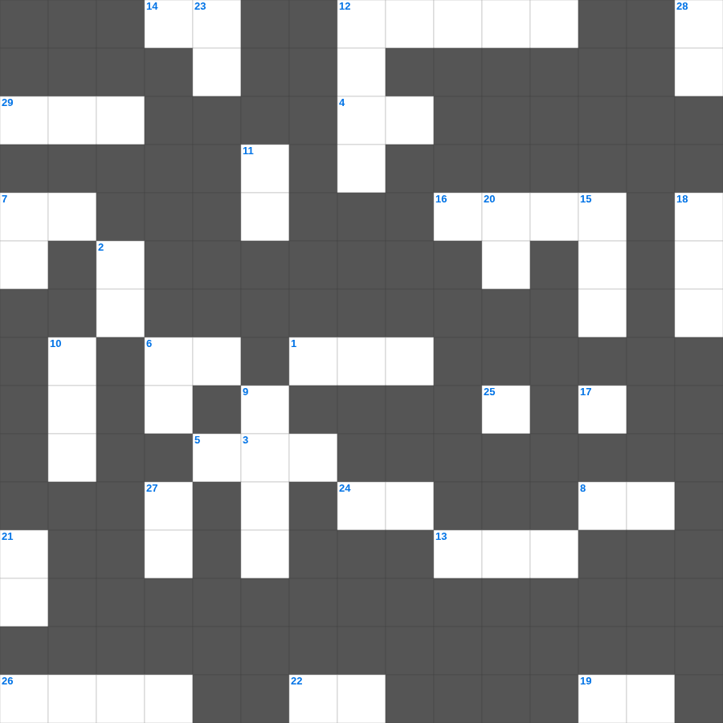

빌레몬서 마스터 100
📌 서비스 정의
십자가로세로는 교회 주보와 주일학교에서 사용할 수 있는 성경 기반 가로세로 퍼즐 서비스입니다. 성경 인물, 사건, 핵심 구절을 바탕으로 제작되었습니다. 온라인 풀이 및 인쇄 기능을 제공합니다.
📖 빌레몬서란?
빌레몬서는 바울이 도망친 노예 오네시모를 위해 주인 빌레몬에게 용서와 형제로서의 받아들임을 부탁하는 짧고 개인적인 서신입니다.
📚 빌레몬서의 주요 사건·주제
오네시모를 위한 바울의 중재 · 용서와 형제 됨에 대한 호소 · 바울의 개인적 우정 표현 · 빌레몬의 신앙에 대한 칭찬 · 그리스도인 관계의 새로운 차원 제시
무료로 즐기는 빌레몬서 빌레몬서 주일학교 퀴즈! 35개의 힌트로 구성된 가로세로 낱말 퍼즐입니다. PC와 모바일 모두 지원되며, 정답을 바로 확인할 수 있어 혼자서도 쉽게 풀 수 있습니다.

📝 가로 힌트
1. 그러나 이제 그리스도께서 죽은 자 가운데서 다시 살아나사 잠자는 자들의 이것이 되셨도다
3. 너희가 우리에게 들은 바 하나님의 말씀을 받을 때에 이것의 말로 받지 아니하고
4. 각각 자기 일을 돌볼뿐더러 또한 각각 다른 사람들의 일을 돌보아 나의 이것을 충만하게 하라
5. 디모데전서 2장에서 모든 사람을 위해 하라고 권면한 네 가지: 간구, 기도, 도고, 이것
6. 바울이 자신을 소개할 때: 하나님의 종이요 예수 그리스도의 이것인 나 바울
7. 모든 이론을 무너뜨리며 하나님 아는 것을 대적하여 높아진 것을 다 무너뜨리고 모든 이것을 사로잡아 그리스도에게 복종하게 하니
8. 아담의 장남, 동생을 죽인 자
9. 주의 궁정에서의 한 날이 다른 곳에서의 이것 날보다 나은즉
12. 에스라가 아하와 강가에서 찾은 느디님 사람들의 수
13. 성벽 완공 후 수문 앞 광장에서 율법책을 낭독한 사람
14. 에스라의 직업 중 하나 (율법에 익숙한 자)
16. 여호수아 1장의 핵심 '좌로나 우로나 이것하지 말라'
17. 하나님의 사랑하심을 받은 형제들아 너희를 이것하심을 아노라
19. 또 함께 일으키사 그리스도 예수 안에서 함께 이것에 앉히시니
22. 애굽 왕 바로가 꾼 꿈 '일곱 마리 살진 이것'
24. 우리가 너희에게 복음을 전할 때 사람에게 이것을 구하지 아니하였노라
26. 해는 뜨고 해는 지되 그 떴던 곳으로 빨리 이것하도다
29. 재앙이 넘어갔다는 뜻의 절기
📝 세로 힌트
2. 전신갑주: 모든 것 위에 이것의 방패를 가지고 이로써 능히 악한 자의 모든 불화살을 소멸하고
3. 호렙산에서 가데스 바네아까지 열하루면 갈 길을 헤맨 시간
4. 베드로전서 1장 4절: 하늘에 간직하신 이것을 잇게 하시나니
6. 너는 이웃과 더불어 다투거든 이것만 분별하고 남의 은밀한 일은 누설하지 말라
7. 나를 믿는 자는 성경에 이름과 같이 그 배에서 이것의 강이 흘러나오리라
9. 하나님이 범죄한 이것들을 용서하지 아니하시고 지옥에 던져 어두운 구덩이에 두어 심판 때까지 지키게 하셨으며
10. 일곱째 달 첫날, 나팔을 불어 기념하는 날
11. 요시야 왕이 므깃도에서 전사할 때 싸운 애굽의 왕
12. 그 귀를 진리에서 돌이켜 허탄한 이것을 따르리라
15. 모세가 바로 앞에서 던져 뱀이 되게 한 것
18. 기약이 이르면 하나님이 그의 나타나심을 보이시리니 하나님은 복되시고 유일하신 이것이시며
20. 요시야가 제거한 것 '가증한 것들과 산당과 이것'
21. 하나님께서 우리를 화목하게 하는 이것을 주셨느니라
23. 에스더가 왕의 눈에 든 이유 '모든 보는 자에게 이것을 얻음'
25. 다윗의 증조할머니 (룻기의 주인공)
27. 음행과 온갖 더러운 것과 이것은 너희 중에서 그 이름조차도 부르지 말라 이는 성도에게 마땅한 바니라
28. 너희 믿음이 부족한 것을 이것하게 하려 함이라
🧩 이 퍼즐에서 배우는 내용
이 퍼즐은 빌레몬서 마스터 100의 핵심 단어와 개념을 자연스럽게 복습할 수 있도록 구성되었습니다. 주일학교 수업이나 개인 성경공부에서 학습 내용을 점검하는 용도로 바로 활용할 수 있습니다.
🧑🏫 교회 교육 자료 활용
이 퍼즐은 주일학교 교재 추천 자료로 활용할 수 있고, 주일학교 주보에 넣기 좋은 분량으로 구성되어 있습니다. 수업용 주일학교 교안에 활동지로 붙이거나, 예배 후 복습용 주일학교 공과교재로 바로 사용할 수 있습니다.
🏷️ 키워드
빌레몬서 주일학교 퀴즈, 빌레몬서, 십자가로세로, 성경퀴즈, 말씀퀴즈, 가로세로퍼즐, 주일학교 교재 추천, 주일학교 주보, 주일학교 교안, 주일학교 공과교재